👋 Halo! Saya Hello! I am
Lulusan S1 Sistem Informasi Universitas Putra Indonesia YPTK Padang dengan fokus pada Web Development, IT Business Analyst, System Analysis, dan UI/UX Design. Menguasai PHP, Laravel, MySQL, Flutter, dan Firebase, serta memiliki pemahaman BPMN/UML, database, CRUD, REST API, dan pengembangan sistem berbasis web. Berpengalaman dalam pengolahan data, digitalisasi dokumen, dan pengembangan solusi digital dengan kemampuan problem solving, analytical thinking, teamwork, dan adaptasi teknologi. Didukung keikutsertaan dalam Pelatihan Web Programmer, pengalaman praktis dalam tata kelola administrasi operasional dan pelaporan di Biro Administrasi Pembangunan Pemprov Sumbar, akurasi rekapitulasi data digital via Sirekap KPU, serta Pelatihan Kartu Prakerja Desain Komunikasi Visual untuk mendukung rekayasa solusi web dan kebutuhan antarmuka sistem digital. Information Systems Graduate from Universitas Putra Indonesia YPTK Padang specializing in Web Development, IT Business Analyst, System Analysis, and UI/UX Design. Proficient in PHP, Laravel, MySQL, Flutter, and Firebase, with deep comprehension of BPMN/UML, databases, CRUD, REST API, and web system development. Experienced in data processing, document digitization, and digital solution delivery with strong problem-solving, analytical thinking, teamwork, and technological adaptation. Backed by participation in Web Programmer Training, practical experience in operational administration governance and reporting at the Regional Development Administration Bureau of West Sumatra Provincial Government, high-accuracy digital data recap via Sirekap KPU, and Prakerja Visual Communication Design Training supporting web solution engineering and digital system UI/UX needs.
Kombinasi analisis kebutuhan bisnis, riset pengguna, dan keterampilan teknis rekayasa perangkat lunak. A synergy between business process analysis, user research, and full-stack software development.
Menganalisis kebutuhan bisnis, menjembatani tim teknis dengan stakeholder, memodelkan alur proses bisnis, dan merumuskan spesifikasi produk digital yang efektif. Analyzing business requirements, bridging technical teams with stakeholders, modeling workflows, and designing effective digital product specifications.
Merancang arsitektur informasi, wireframing, dan desain antarmuka interaktif yang modern, estetik, dan mengutamakan kemudahan pengalaman pengguna (UX). Crafting information architecture, wireframes, and modern interactive interfaces focused on intuitive user experience (UX) and visual elegance.
Membangun aplikasi mobile multiplatform dengan performa tinggi, integrasi backend realtime, sinkronisasi cloud data, dan implementasi payment gateway. Building high-performance cross-platform mobile apps with real-time backend synchronization, cloud storage, and secure payment integrations.
Mengembangkan sistem informasi dan aplikasi web responsif, aman, dan dinamis dengan fitur deteksi biometrik wajah (Face-api.js) serta validasi lokasi GPS. Developing responsive, secure, and dynamic web applications featuring face recognition biometrics (Face-api.js) and GPS geofencing radius validation.
Pengalaman industri dan kontribusi nyata dalam pengembangan sistem instansi pemerintah dan perusahaan. Industrial track record and tangible contributions in institutional software development.
Pelatihan intensif pengembangan aplikasi web berbasis industri dengan fokus pada arsitektur MVC, framework Laravel, pengelolaan basis data MySQL, dan perancangan antarmuka responsif. Intensive industry-oriented web application development training focusing on MVC architecture, Laravel framework, MySQL database administration, and responsive UI/UX design.
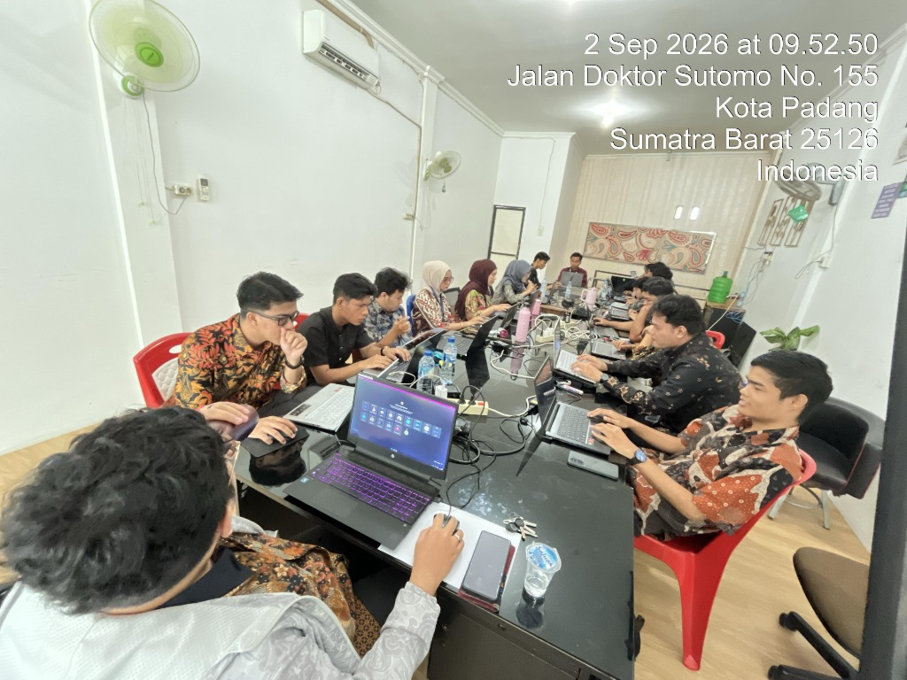
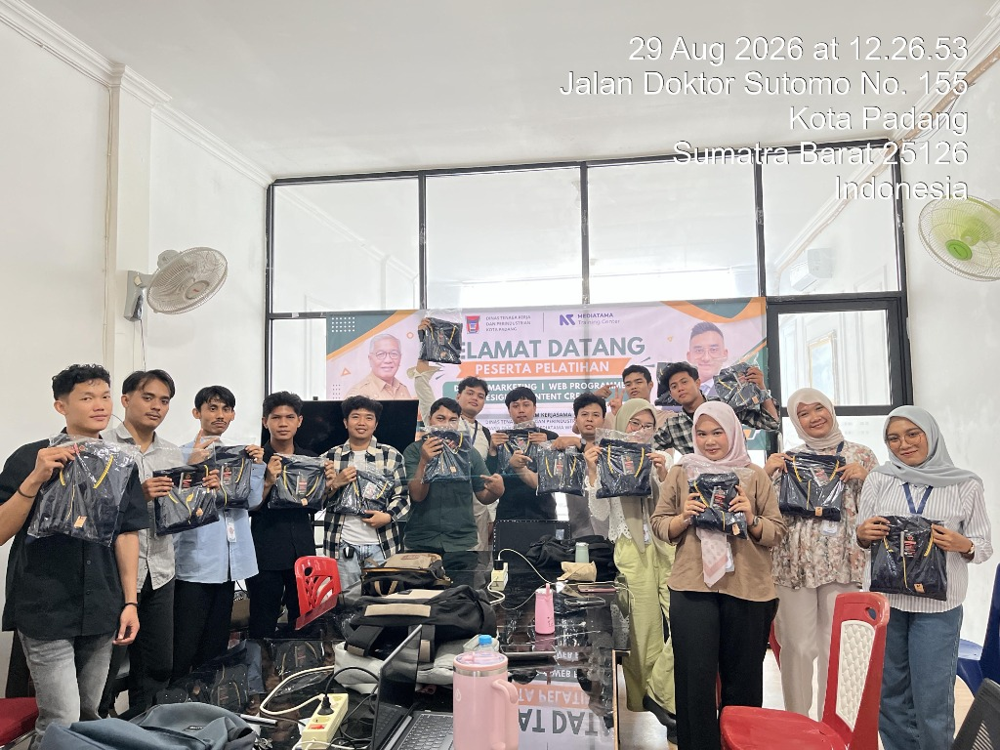
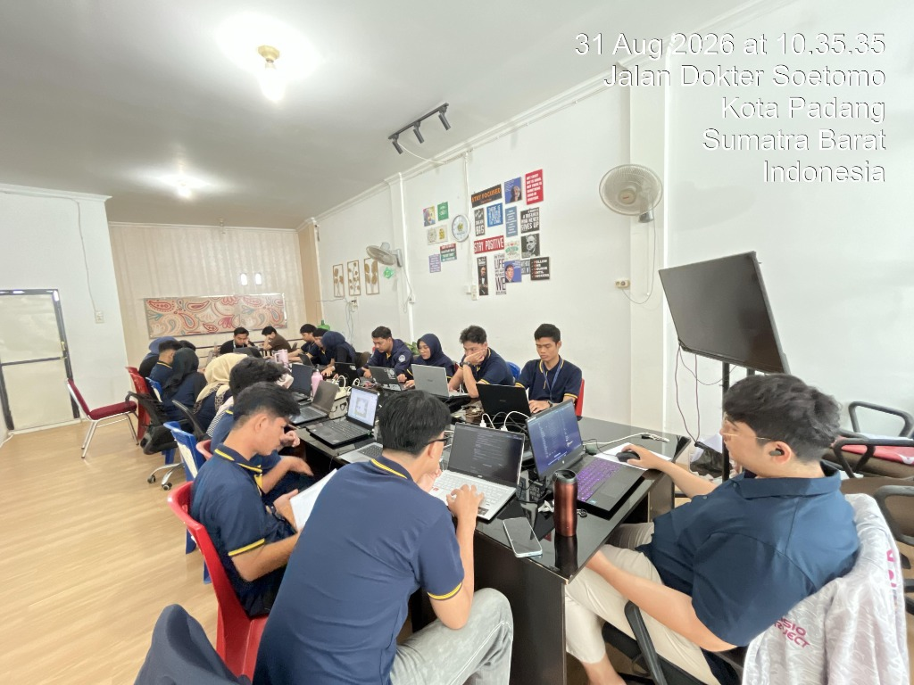
Berperan aktif dalam pengelolaan tata kelola dokumen administrasi pemerintah daerah, digitalisasi berkas, serta rekapitulasi pelaporan kegiatan pembangunan daerah. Actively contributed to regional government document governance, file digitization, and regional development activity reporting recaps.
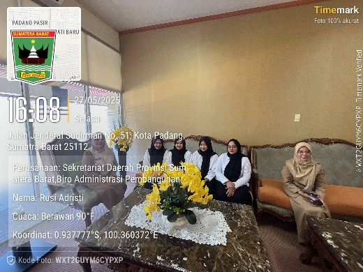
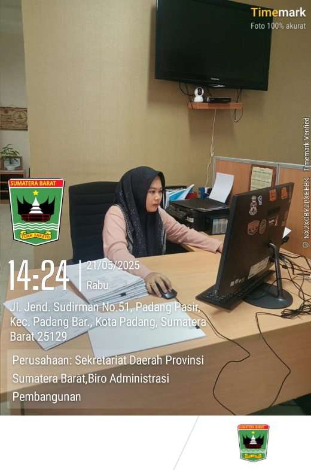
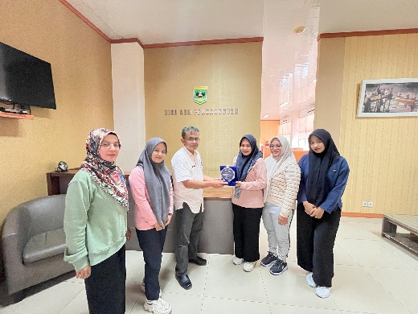
Bertanggung jawab dalam digitalisasi data formulir C.Hasil pemilu secara langsung dan presisi tinggi menggunakan sistem terintegrasi KPU. Responsible for direct and high-precision digital data entry of election results using the integrated KPU mobile system.
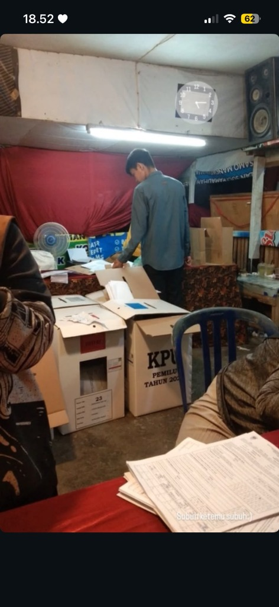
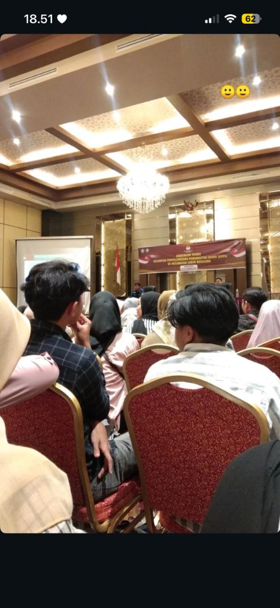
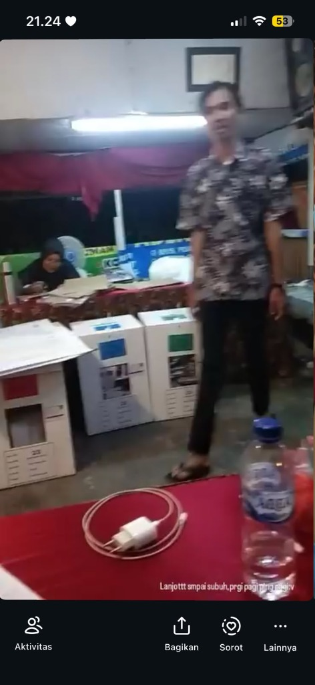
Pelatihan intensif berbasis proyek dalam merancang komunikasi visual modern, tata letak antarmuka, dan identitas visual digital. Project-based intensive training in crafting modern visual communications, UI layouts, and digital visual brand identities.
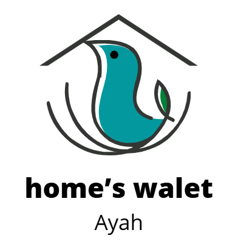
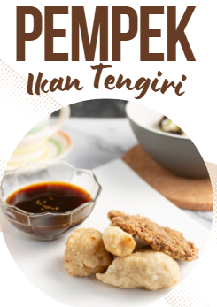
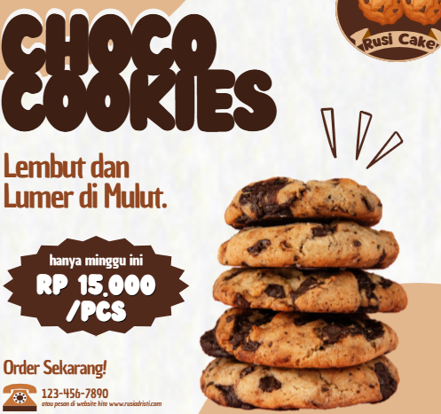
Berbagai proyek aplikasi, riset bisnis teknologi, dan sistem informasi yang telah diselesaikan. Klik kartu untuk melihat detail & galeri. A selection of digital platforms, fintech concepts, and mobile apps. Click any card to explore full interactive details & media.
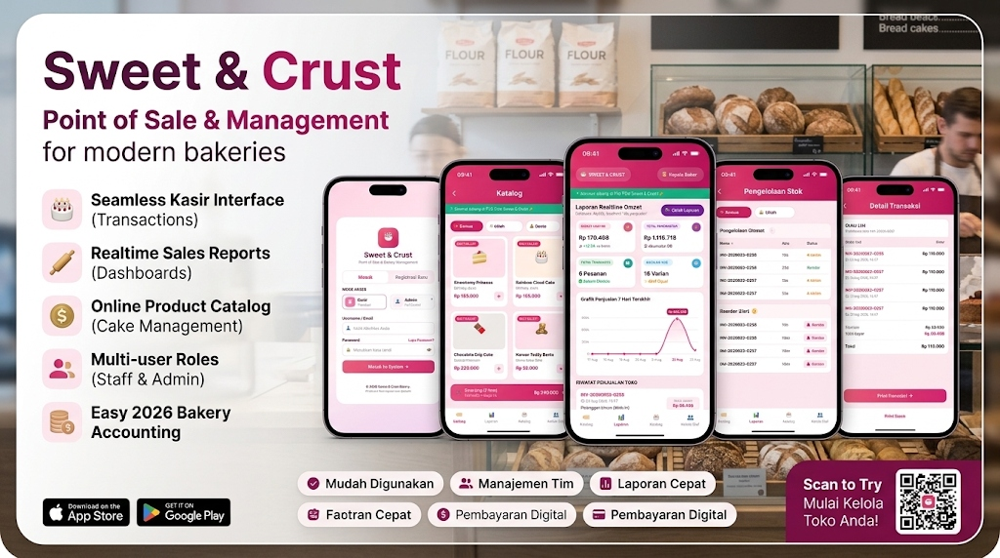
Desain antarmuka sistem POS bakery berbasis UI/UX (Figma) dengan modul kasir cepat, katalog kue dinamis, analitik omzet real-time, dan manajemen tim multi-role. Bakery POS UI/UX system design built with Figma featuring fast cashier checkout, dynamic cake catalog, real-time revenue analytics, and multi-role team management.
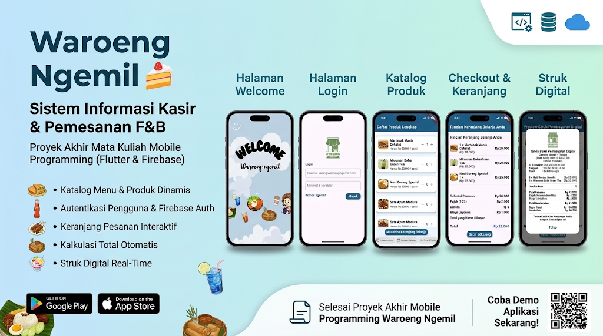
Sistem kasir dan pemesanan F&B berbasis mobile (Flutter & Firebase) dengan modul katalog menu dinamis, keranjang pesanan interaktif, kalkulasi otomatis, dan struk digital real-time. Mobile-based F&B POS and ordering system built with Flutter & Firebase featuring dynamic menu catalog, interactive order cart, automated calculation, and real-time digital receipts.
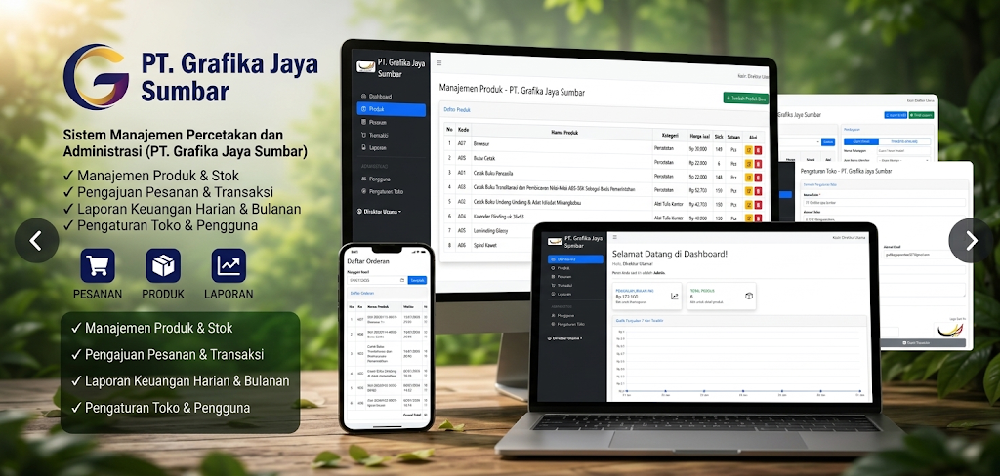
Sistem informasi manajemen percetakan berbasis web (PHP OOP & MySQL) dengan modul kasir POS, kontrol stok otomatis, verifikasi pembayaran, dan analitik penjualan (Chart.js). Web-based printing management system built with PHP OOP & MySQL featuring POS cashier, automated inventory, payment verification, and sales analytics (Chart.js).
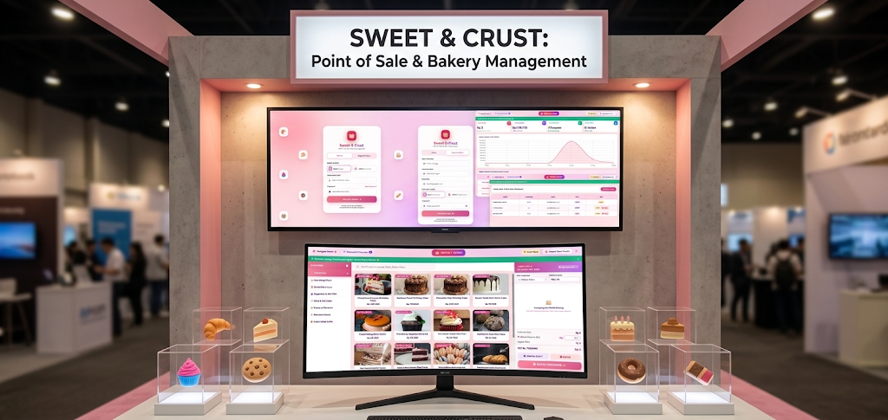
Sistem kasir dan manajemen operasional bakery berbasis Laravel & MySQL (Uji Kompetensi Web Programmer) dengan arsitektur MVC, multi-role auth, dan pelaporan omzet real-time. Web-based bakery POS and operations management system built with Laravel & MySQL (Web Programmer Certification) featuring MVC, multi-role auth, and real-time revenue analytics.
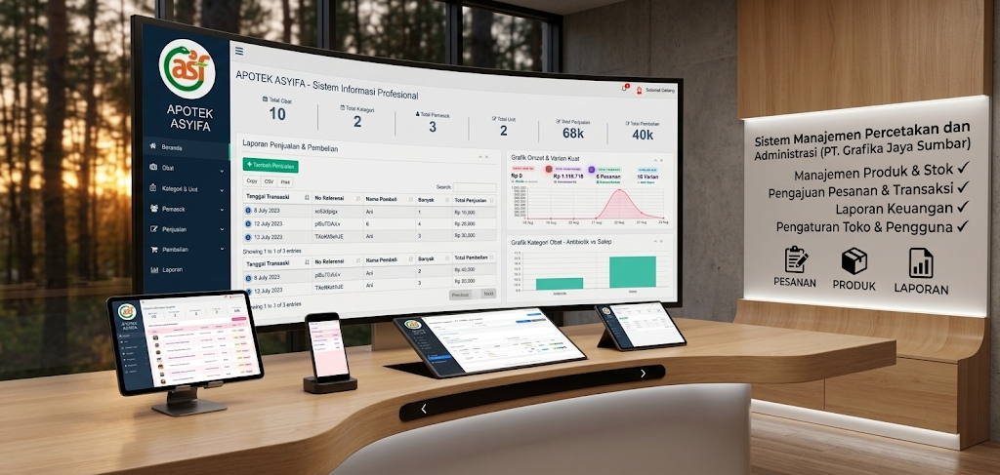
Sistem informasi manajemen apotek berbasis PHP & MySQL (Back-Office System) dengan modul inventaris obat, deteksi kedaluwarsa otomatis, log transaksi, dan analitik omzet (Chart.js). Web-based pharmacy management system built with PHP & MySQL (Back-Office System) featuring drug inventory, automated expiration alerts, transaction logging, and revenue analytics (Chart.js).
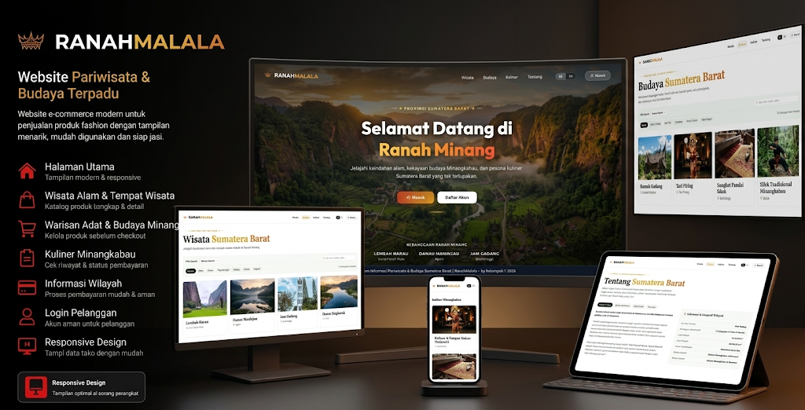
Platform website pariwisata dan kebudayaan terpadu Sumatera Barat berbasis Laravel & MySQL (Proyek Besar Pelatihan Web Programmer) dengan arsitektur MVC, katalog destinasi alam, warisan adat Minang, direktori kuliner, dan desain responsif multi-device. Integrated West Sumatra tourism and culture web platform built with Laravel & MySQL (Web Programmer Capstone Project) featuring MVC architecture, nature destination catalogs, Minangkabau heritage guides, culinary directory, and responsive multi-device design.
Sertifikasi kelulusan magang instansi pemerintahan, tes kemahiran bahasa Inggris TOEFL, sertifikasi kompetensi internasional Huawei ICT Academy, serta pelatihan Prakerja. Government internship credentials, TOEFL English proficiency scores, Huawei ICT Academy international certifications, and Prakerja digital training.
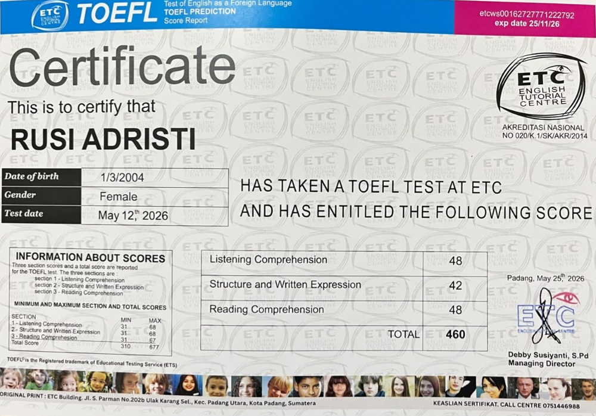
English Tutorial Centre (ETC) • Akreditasi Nasional • Mei 2026 English Tutorial Centre (ETC) • National Accreditation • May 2026
Huawei ICT Academy • November 2025
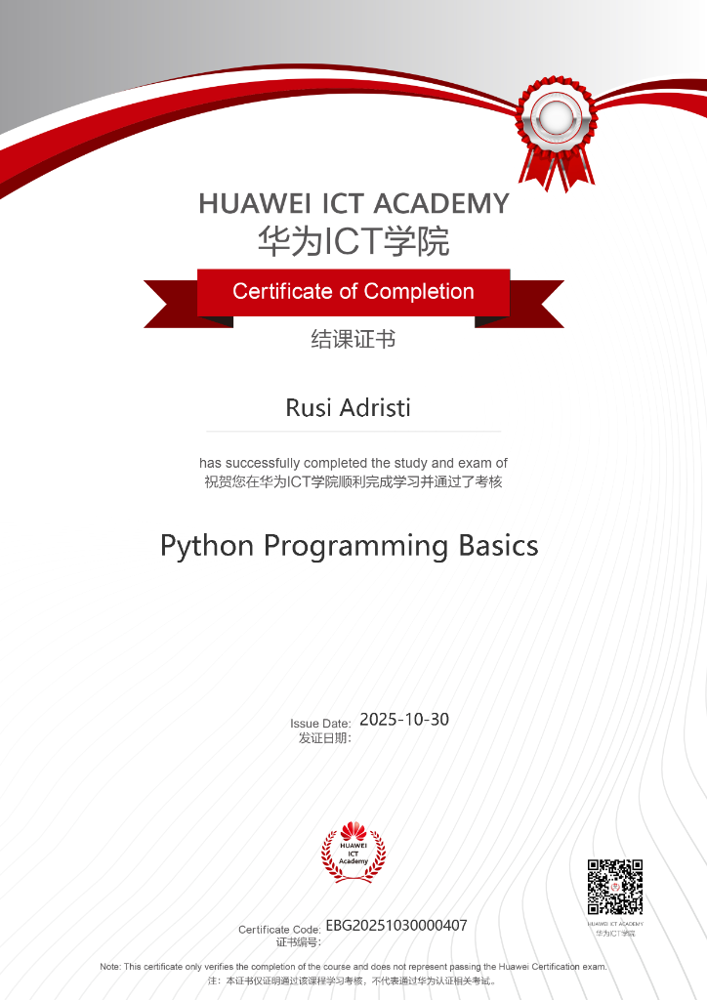
Huawei ICT Academy • Oktober 2025
Huawei ICT Academy • Oktober 2025
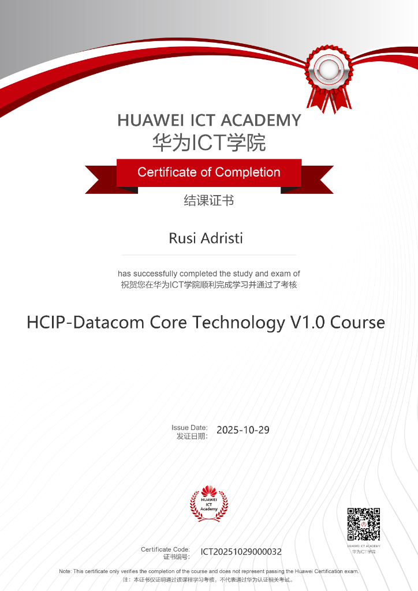
Huawei ICT Academy • Oktober 2025
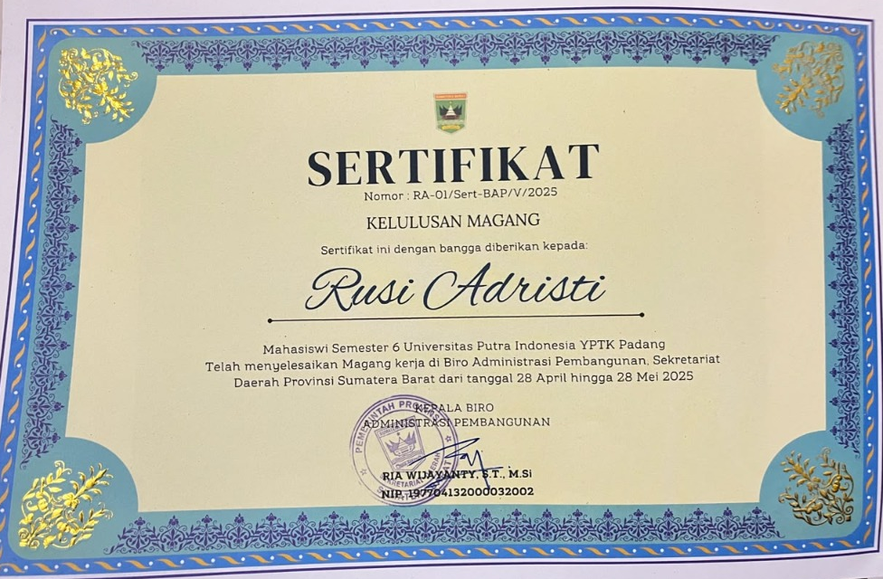
Biro Administrasi Pembangunan Setda Prov. Sumatera Barat • Mei 2025 Regional Development Administration Bureau, West Sumatra Provincial Govt • May 2025
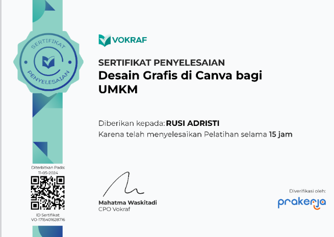
Vokraf & Kartu Prakerja (Kemenko Perekonomian RI) • Mei 2024 Vokraf & Prakerja (Coordinating Ministry for Economic Affairs RI) • May 2024